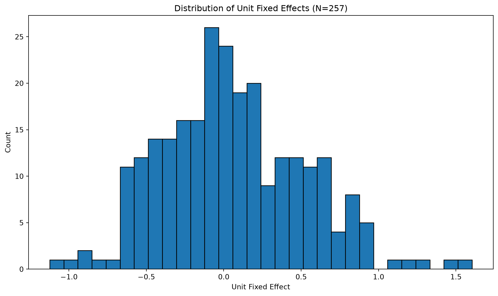
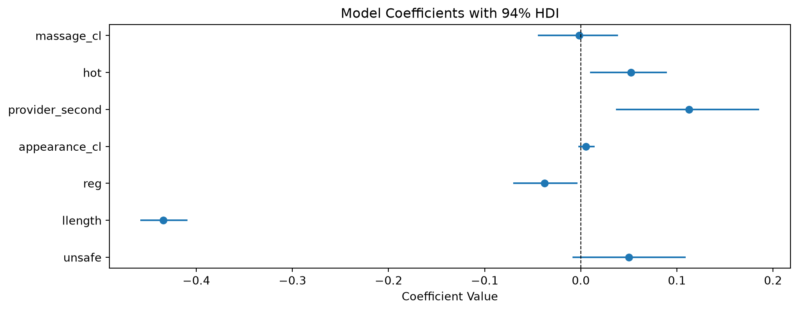
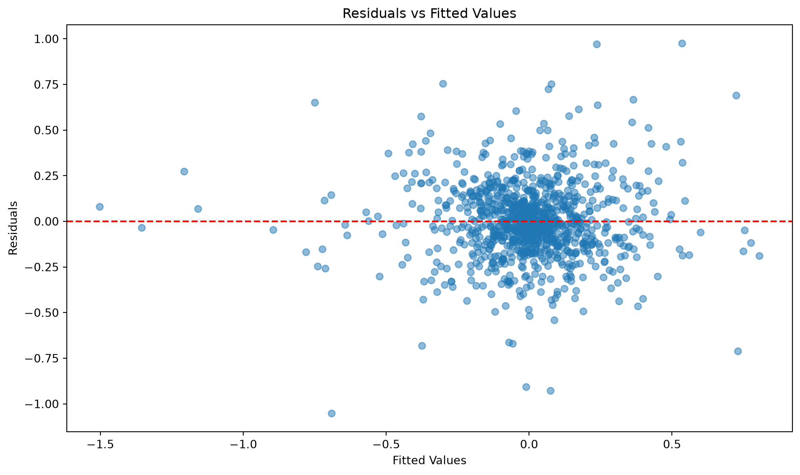

import warnings
warnings.filterwarnings("ignore")
import numpy as np
import pandas as pd
import matplotlib.pyplot as plt
from sklearn.linear_model import LinearRegression
import causalpy as cp
from causalpy.formula_utils import build_formula_matrices
import sys
sys.path.insert(0, "../src")
from mixtape_causalpy import load_sasp
%matplotlib inlineChapter 8: Panel Data
Causal Inference: The Mixtape → CausalPy
Mixtape chapter: Panel Data
CausalPy method: PanelRegression
Overview
Pooled OLS treats every client session as a separate draw. If providers who take riskier sessions also differ in ways that do not change across their sessions — and those differences affect price — the provider effect sits in the error and the slopes are biased.
The within estimator, which is what provider fixed effects estimate, subtracts each provider’s mean. That deletes the time-invariant unit effect (u_i). A slope is then identified only from within-provider variation. Two conditions have to hold: the idiosyncratic error is strictly exogenous given the unit effect, and the regressor actually moves inside the provider. A covariate that is constant for each provider is wiped, not estimated.
Important
Fixed effects are not a fix for reverse causality, and they are not a fix for a confounder that changes across sessions. The chapter shows those failures with published tables from Cornwell and Trumbull (1994) and Cornwell and Rupert (1997). Those datasets are not in the Mixtape repo. This page cites the tables and does not recreate them.
The coded exercise is Cunningham and Kendall’s Survey of Adult Service Providers. Each row is one of a provider’s recent client sessions, not a calendar year. The outcome is log hourly price (lnw). Table 8.3 reports three columns on the same balanced sample: pooled OLS, provider fixed effects, and OLS on provider-demeaned variables. Columns 2 and 3 are the same point estimates. That equivalence is the result to show. The book does not put session fixed effects in this regression.
What we’ll cover
- Clean the panel to the book’s 1,028-row sample
- Pooled OLS, provider dummy FE, and the within estimator — same sklearn backend
- One Bayesian within regression, and why its interval is not the book’s clustered standard error
Mixtape files implemented
| File | Description | Status |
|---|---|---|
sasp.py |
Sex-worker panel, pooled OLS versus provider FE | ✅ |
bail.py is a judge-leniency instrumental-variables design, not this page. The cluster-robust Monte Carlos (cluster1.py–cluster4.py) are not in this chapter, and CausalPy does not report cluster-robust frequentist standard errors. Neither is estimated here.
Setup
The outcome is lnw. The regressors are the full Table 8.3 list, not a shortened covariate set. Provider characteristics before age_cl do not vary across a provider’s sessions. Client and session characteristics from age_cl onward do.
TIME_INVARIANT = [
"age",
"asq",
"bmi",
"hispanic",
"black",
"other",
"asian",
"schooling",
"cohab",
"married",
"divorced",
"separated",
]
TIME_VARYING = [
"age_cl",
"unsafe",
"llength",
"reg",
"asq_cl",
"appearance_cl",
"provider_second",
"asian_cl",
"black_cl",
"hispanic_cl",
"othrace_cl",
"hot",
"massage_cl",
]
FORMULA_VARS = ["lnw", *TIME_INVARIANT, *TIME_VARYING]
# Book order, from python/sasp.py. Slopes below are checked against this list.
REGRESSORS = TIME_INVARIANT + TIME_VARYING
# Table 8.3 point estimates at the printed precision. Parentheses in the book
# are provider-clustered standard errors; those are not targets.
BOOK = {
"unsafe": (0.013, 0.051),
"llength": (-0.308, -0.435),
"reg": (-0.047, -0.037),
"appearance_cl": (0.020, 0.006),
"provider_second": (0.055, 0.113),
"othrace_cl": (0.156, 0.142),
"hot": (0.133, 0.052),
"massage_cl": (-0.134, -0.001),
}
DISCUSSED = [
"unsafe",
"llength",
"reg",
"appearance_cl",
"provider_second",
"hot",
"massage_cl",
]Load and clean
provider_second is not numeric in the Stata file. pd.read_stata brings it in as a labelled category ("1. No", "2. Yes"). Check that before fitting. The other regressors are numeric.
raw = load_sasp()
print(f"Raw shape: {raw.shape}")
print("Non-numeric columns:")
print(raw.select_dtypes(exclude="number").dtypes)
print(raw["provider_second"].value_counts(dropna=False))Raw shape: (1787, 31)
Non-numeric columns:
provider_second category
dtype: object
provider_second
1. No 1630
2. Yes 87
NaN 70
Name: count, dtype: int64Cleaning follows the chapter, not a looser dropna on the whole frame:
- Drop a row if any Table 8.3 variable is missing.
- Keep providers who still have all four sessions.
- Recode
provider_secondto 1/0, matchingsasp.py("2. Yes"→ 1).
The cleaned frame has to be 1,028 rows. A different sample is not comparable to Table 8.3.
missing = [column for column in ["id", "session", *FORMULA_VARS] if column not in raw.columns]
if missing:
raise RuntimeError(f"sasp_panel.dta is missing {missing}")
sasp = raw.dropna(subset=FORMULA_VARS).copy()
sessions_left = sasp.groupby("id")["session"].transform("size")
sasp = sasp.loc[sessions_left == 4].copy()
labels = set(sasp["provider_second"].astype(str).unique())
if labels != {"1. No", "2. Yes"}:
raise RuntimeError(f"unexpected provider_second labels: {sorted(labels)}")
sasp["provider_second"] = np.where(
sasp["provider_second"].astype(str) == "2. Yes", 1.0, 0.0
)
if len(sasp) != 1028:
raise RuntimeError(f"cleaned SASP sample has {len(sasp)} rows, expected 1028")
if not (sasp.groupby("id").size() == 4).all():
raise RuntimeError("cleaned sample is not balanced at four sessions")
print(f"Cleaned rows: {len(sasp)}")
print(f"Providers: {sasp['id'].nunique()}")
print(f"Sessions per provider: {sorted(int(n) for n in sasp.groupby('id').size().unique())}")
print(sasp["provider_second"].value_counts().rename("provider_second"))Cleaned rows: 1028
Providers: 257
Sessions per provider: [4]
provider_second
0.0 991
1.0 37
Name: provider_second, dtype: int64What fixed effects can see
Subtract the provider mean and the time-invariant columns are identically zero. That is the within transformation, not a coefficient the dummy regression should be asked to invent.
within_sd = sasp.groupby("id")[REGRESSORS].std().max().rename("max within-unit SD")
print(within_sd.loc[TIME_INVARIANT].to_frame())
print(within_sd.loc[TIME_VARYING].to_frame())
if not np.allclose(within_sd.loc[TIME_INVARIANT], 0.0):
raise RuntimeError("a listed time-invariant covariate varies within provider") max within-unit SD
age 0.0
asq 0.0
bmi 0.0
hispanic 0.0
black 0.0
other 0.0
asian 0.0
schooling 0.0
cohab 0.0
married 0.0
divorced 0.0
separated 0.0
max within-unit SD
age_cl 21.108845
unsafe 0.577350
llength 2.483792
reg 0.577350
asq_cl 2569.883301
appearance_cl 4.041452
provider_second 0.577350
asian_cl 0.577350
black_cl 0.577350
hispanic_cl 0.577350
othrace_cl 0.577350
hot 0.577350
massage_cl 0.577350Takeaway: age, BMI, race, schooling, and marital status are identified in pooled OLS and wiped by provider demeaning. The book prints them as 0.000 with a missing standard error in the FE columns.
Three point estimates
Same sklearn backend for all three columns, so a difference is the estimator, not the optimizer. PanelRegression requires unit_fe_variable, so pooled OLS cannot be that class. It is LinearRegression on the formula design matrix, with fit_intercept=False because patsy already built the intercept column. CausalPy does the same internally.
time_fe_variable stays unset. On the demeaned path that argument is not a label: setting it also demeans by that column, which would be two-way FE. The book is one-way provider FE. Session is the within-unit index, not a second fixed effect.
The demeaned formula keeps only the time-varying regressors. After demeaning, the provider characteristics are zero columns and the design is singular. Leaving them out is the result, not a shorter model.
pooled_formula = "lnw ~ " + " + ".join(REGRESSORS)
dummy_formula = "lnw ~ C(id) + " + " + ".join(REGRESSORS)
demeaned_formula = "lnw ~ " + " + ".join(TIME_VARYING)
if "session" in pooled_formula or "C(session)" in dummy_formula or "C(session)" in demeaned_formula:
raise RuntimeError("estimating formulas must not include session fixed effects")
for column in TIME_INVARIANT:
if column in demeaned_formula.split(" ~ ", 1)[1].split(" + "):
raise RuntimeError(f"{column} is time-invariant and does not belong in the demeaned formula")
y_pooled, X_pooled = build_formula_matrices(pooled_formula, sasp)
pooled_fit = LinearRegression(fit_intercept=False).fit(
np.asarray(X_pooled), np.asarray(y_pooled).ravel()
)
pooled_slopes = dict(zip(X_pooled.design_info.column_names, pooled_fit.coef_))
fe = cp.PanelRegression(
sasp,
dummy_formula,
unit_fe_variable="id",
time_fe_variable=None,
fe_method="dummies",
model=LinearRegression(fit_intercept=False),
).fit()
within = cp.PanelRegression(
sasp,
demeaned_formula,
unit_fe_variable="id",
time_fe_variable=None,
fe_method="demeaned",
model=LinearRegression(fit_intercept=False),
).fit()
def coefficient_means(result):
"""Mean coefficient by patsy label.
PanelRegression keeps draws on the model backend rather than a result
bundle. An OLS backend is one draw, so the mean is the point estimate.
"""
draws = result._model_backend.coefficients()
return {
str(name): float(draws.sel(coeffs=name).mean())
for name in draws.coords["coeffs"].values
}
fe_slopes = coefficient_means(fe)
within_slopes = coefficient_means(within)
if fe.time_fe_variable is not None or within.time_fe_variable is not None:
raise RuntimeError("estimating fits must leave time_fe_variable unset")
for term in TIME_VARYING:
if abs(fe_slopes[term] - within_slopes[term]) > 1e-8:
raise RuntimeError(f"{term}: dummy FE and demeaned FE differ")
for term, (ols_target, fe_target) in BOOK.items():
if round(pooled_slopes[term], 3) != ols_target:
raise RuntimeError(f"{term} pooled OLS {pooled_slopes[term]:.6f} != {ols_target}")
if round(fe_slopes[term], 3) != fe_target or round(within_slopes[term], 3) != fe_target:
raise RuntimeError(
f"{term} FE {fe_slopes[term]:.6f} / demeaned {within_slopes[term]:.6f} != {fe_target}"
)
comparison = pd.DataFrame(
{
"Pooled OLS": pd.Series({term: pooled_slopes[term] for term in BOOK}),
"Provider FE": pd.Series({term: fe_slopes[term] for term in BOOK}),
"Demeaned": pd.Series({term: within_slopes[term] for term in BOOK}),
"Book OLS": pd.Series({term: targets[0] for term, targets in BOOK.items()}),
"Book FE": pd.Series({term: targets[1] for term, targets in BOOK.items()}),
}
)
comparison.round(3)| Pooled OLS | Provider FE | Demeaned | Book OLS | Book FE | |
|---|---|---|---|---|---|
| unsafe | 0.013 | 0.051 | 0.051 | 0.013 | 0.051 |
| llength | -0.308 | -0.435 | -0.435 | -0.308 | -0.435 |
| reg | -0.047 | -0.037 | -0.037 | -0.047 | -0.037 |
| appearance_cl | 0.020 | 0.006 | 0.006 | 0.020 | 0.006 |
| provider_second | 0.055 | 0.113 | 0.113 | 0.055 | 0.113 |
| othrace_cl | 0.156 | 0.142 | 0.142 | 0.156 | 0.142 |
| hot | 0.133 | 0.052 | 0.052 | 0.133 | 0.052 |
| massage_cl | -0.134 | -0.001 | -0.001 | -0.134 | -0.001 |
Dummy FE and demeaned FE match each other, not merely the printed table. The design for the dummy fit is rank-deficient by the twelve time-invariant covariates: those columns lie in the span of the provider dummies. Sklearn’s least squares does not drop them, and the min-norm numbers on age, BMI, race, schooling, and marital status are not identified. They are not the book’s 0.000. The within transformation is the result that matches the book: those columns have within-unit SD 0, so the demeaned formula omits them. Do not “solve” that by adding session FE or by dropping a different set of regressors than the book does.
X_dummy = np.asarray(fe.design["X"])
dummy_rank = np.linalg.matrix_rank(X_dummy)
print(f"Dummy design: {X_dummy.shape[1]} columns, rank {dummy_rank}")
print(f"Rank gap: {X_dummy.shape[1] - dummy_rank}")
print(f"Time-invariant regressors: {len(TIME_INVARIANT)}")
if X_dummy.shape[1] - dummy_rank != len(TIME_INVARIANT):
raise RuntimeError("dummy rank gap is not the time-invariant covariate count")
print(f"Providers: {fe.n_units}; time FE: {fe.time_fe_variable}")Dummy design: 282 columns, rank 270
Rank gap: 12
Time-invariant regressors: 12
Providers: 257; time FE: Nonefe.plot_unit_effects()
plt.show()
plot_unit_effects() is dummy-FE only. It is not called on the Bayesian fit below. plot_trajectories() is not called either: it raises when time_fe_variable is unset, and setting that argument on an estimating fit would change the estimator.
Bayesian within estimator
This is the CausalPy result. fe_method="demeaned", time-varying formula only, time_fe_variable left unset, then .fit(). The dummy specification is not sampled — about 257 provider effects. The prior is the model’s default. It is not tuned to the published numbers.
sample_kwargs = {
"tune": 1000,
"draws": 1000,
"chains": 2,
"cores": 1,
"target_accept": 0.95,
"random_seed": 42,
"progressbar": False,
}
bayes = cp.PanelRegression(
sasp,
demeaned_formula,
unit_fe_variable="id",
time_fe_variable=None,
fe_method="demeaned",
model=cp.pymc_models.LinearRegression(sample_kwargs=sample_kwargs),
).fit()
if bayes.time_fe_variable is not None or bayes.fe_method != "demeaned":
raise RuntimeError("Bayesian fit must be one-way demeaned provider FE")
bayes_means = coefficient_means(bayes)
if abs(bayes_means["unsafe"] - within_slopes["unsafe"]) > 0.01:
raise RuntimeError("Bayesian unsafe mean is not sitting on the OLS within estimate")
bayes.summary()Initializing NUTS using jitter+adapt_diag...
Sequential sampling (2 chains in 1 job)
NUTS: [beta, y_hat_sigma]
Sampling 2 chains for 1_000 tune and 1_000 draw iterations (2_000 + 2_000 draws total) took 20 seconds.
We recommend running at least 4 chains for robust computation of convergence diagnostics
Sampling: [y_hat]
Sampling: [beta, y_hat, y_hat_sigma]
Panel Regression
============================================================
Units: 257 (id)
FE method: demeaned
Observations: 1028
============================================================
Model Coefficients:
Model coefficients:
Intercept -0.00015, 94% HDI [-0.012, 0.011]
age_cl 0.0023, 94% HDI [-0.0074, 0.011]
unsafe 0.05, 94% HDI [-0.0085, 0.11]
llength -0.43, 94% HDI [-0.46, -0.41]
reg -0.038, 94% HDI [-0.07, -0.0031]
asq_cl -1.5e-05, 94% HDI [-0.00011, 8.4e-05]
appearance_cl 0.0056, 94% HDI [-0.0026, 0.015]
provider_second 0.11, 94% HDI [0.037, 0.19]
asian_cl -0.011, 94% HDI [-0.067, 0.056]
black_cl 0.027, 94% HDI [-0.036, 0.092]
hispanic_cl -0.062, 94% HDI [-0.14, 0.018]
othrace_cl 0.14, 94% HDI [0.047, 0.23]
hot 0.052, 94% HDI [0.0096, 0.089]
massage_cl -0.0014, 94% HDI [-0.044, 0.039]bayes_comparison = pd.DataFrame(
{
"OLS within": pd.Series({term: within_slopes[term] for term in BOOK}),
"Posterior mean": pd.Series({term: bayes_means[term] for term in BOOK}),
}
)
bayes_comparison["Difference"] = (
bayes_comparison["Posterior mean"] - bayes_comparison["OLS within"]
)
bayes_comparison.round(3)| OLS within | Posterior mean | Difference | |
|---|---|---|---|
| unsafe | 0.051 | 0.050 | -0.001 |
| llength | -0.435 | -0.434 | 0.000 |
| reg | -0.037 | -0.038 | -0.000 |
| appearance_cl | 0.006 | 0.006 | -0.000 |
| provider_second | 0.113 | 0.113 | -0.000 |
| othrace_cl | 0.142 | 0.142 | -0.000 |
| hot | 0.052 | 0.052 | -0.000 |
| massage_cl | -0.001 | -0.001 | -0.000 |
bayes.plot_coefficients(var_names=DISCUSSED)
plt.show()
bayes.plot_residuals()
plt.show()
effect_summary() always raises NotImplementedError on this class. This regression is not a difference-in-differences, interrupted time series, or synthetic-control design, and it is not InteractiveFixedEffectsSyntheticControl. The page does not call effect_summary().
Comparison to the book
Removing the provider effect moves the slopes the chapter discusses.
The unsafe association is 0.013 in pooled OLS and 0.051 with provider effects. The premium is invisible until the provider mean is removed. The session-length elasticity steepens, from -0.308 to -0.435. The client-attractiveness slope shrinks from 0.020 to 0.006, and the massage association shrinks from -0.134 to -0.001. Time-invariant covariates drop out of the within columns.
Warning
A posterior highest-density interval is not a provider-clustered standard error. Table 8.3’s parentheses are clustered at the provider, and they already differ slightly between the FE and demeaned columns (unsafe: 0.028 versus 0.026) even though the point estimates match. This page compares point estimates. CausalPy does not report a cluster-robust covariance here.
Posterior means from the demeaned Bayesian fit sit on the OLS within estimates. They are not a second replication of the clustered standard errors, and the prior was not chosen to chase the printed table.
| Aspect | Table 8.3 | This page |
|---|---|---|
| Sample | 1,028 balanced provider-sessions | Same sample; the page stops otherwise |
| Pooled OLS and FE point estimates | Printed to 3 decimals | Sklearn, same formula, matched at that precision |
| FE versus demeaned | Same point estimates | Required to match each other, not only the table |
| Inference | Provider-clustered SEs | OLS point estimates; Bayesian HDI on the within fit |
| Session FE | Not in the estimating equation | time_fe_variable left unset |
CausalPy notes
Construction validates the formula and builds the design. Nothing is sampled until .fit().
| Fit | fe_method |
Formula | What it is for |
|---|---|---|---|
| Pooled OLS | not PanelRegression |
Full Table 8.3 formula | The column that ignores (u_i) |
| Provider FE | "dummies" |
Full formula plus C(id) |
OLS equivalence check, and plot_unit_effects() |
| Within | "demeaned" |
Time-varying regressors only | Same OLS slopes without a dummy per provider |
| Bayesian within | "demeaned" |
Same time-varying formula | Posterior uncertainty. Not a clustered SE |
There is no hierarchical or partial-pooling fixed effect in this fit. The chapter does not ask for one.
Summary
Provider fixed effects and the within transformation answer the same point-estimate question, and only that question. They delete time-invariant confounding. They leave reverse causality and session-varying confounding alone. On this survey, that distinction is visible: the unsafe premium and the steeper session-length elasticity show up once the provider mean is removed, and the time-invariant covariates do not survive the transformation.
References
- Mixtape chapter (1st ed.): Chapter 8: Panel Data
- Exercise: Cunningham and Kendall, Survey of Adult Service Providers. Data file
sasp_panel.dtain the Mixtape repo. - FE is not a cure-all: Cornwell and Trumbull (1994); Cornwell and Rupert (1997). Cited, not replicated.
- CausalPy:
PanelRegression